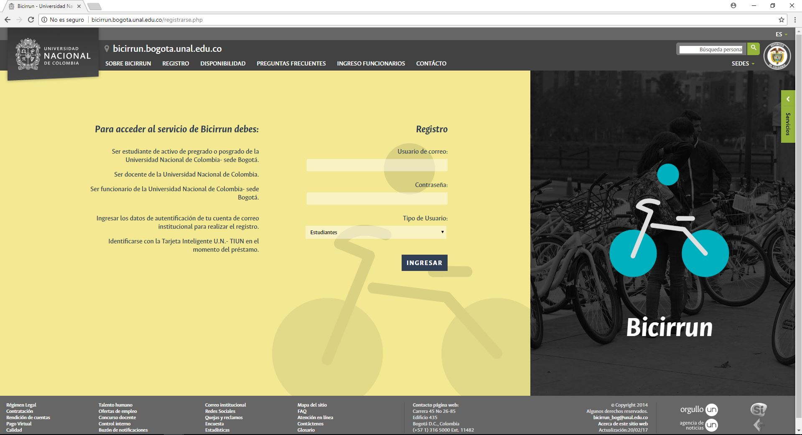
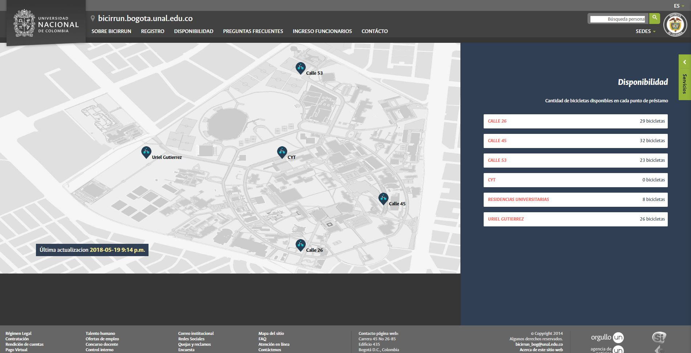

SISTEMA INFORMATIVO DE TRANSPORTE U.N.
El servicio de BICIRRUN cuenta actualmente con 50 bicicletas, distribuidas
en 5 puntos dentro de la universidad, para hacer uso de estas hay que registrarse en:

Para registrarse es necesario estar activo en la universidad, ya sea como docente, estudiante o contratista.
Una vez registrado, podrá solicitar una bicicleta en cualquiera de los siguientes puntos:
CALLE 26
CALLE 45
CALLE 53
CYT
RESIDENCIAS UNIVERSITARIAS
URIEL GUTIÉRREZ
Actualmente la disponibilidad en cada punto se puede ver en:

En lo corrido del año se han registrado 68741 préstamos, esto equivale a una reducción
superior a 4.3 toneladas en las emisiones de CO2.